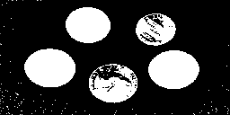
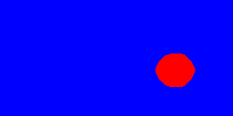
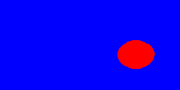
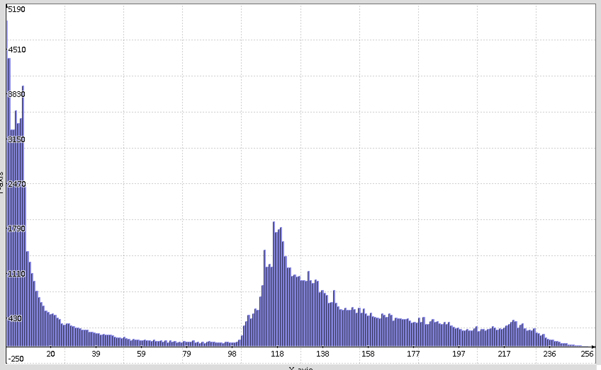
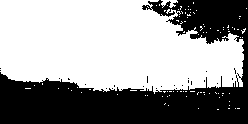
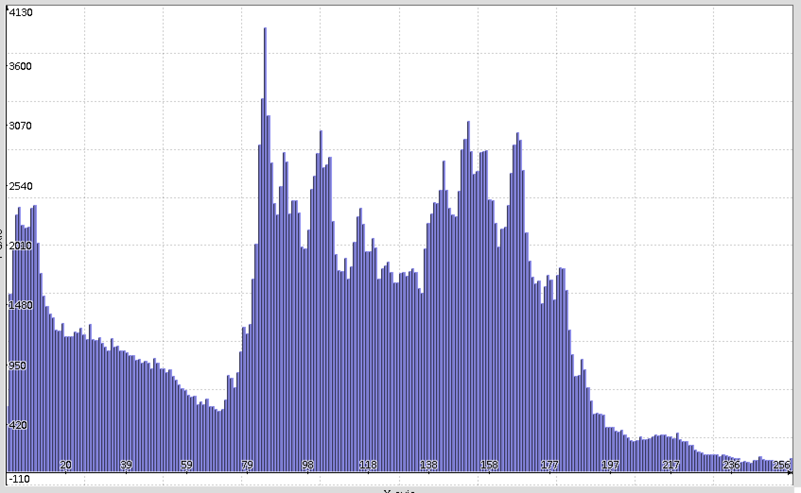
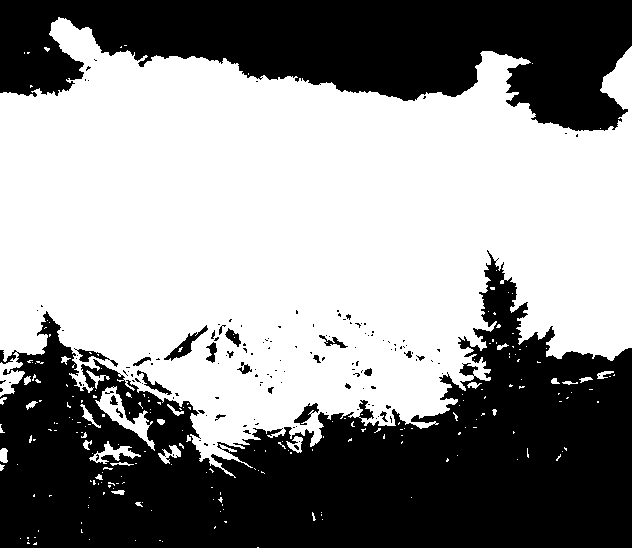

Segmentation - Learning Reflection
Author: Tony Fu
Date: August 25, 2023
Device: MacBook Pro 16-inch, Late 2021 (M1 Pro)
Code: GitHub
Reference: Chapter 7 Digital Image Processing with C++: Implementing Reference Algorithms with the CImg Library by Tschumperlé, Tilmant, Barra
1. Active Contours
This chapter is quite math-heavy, so for a more intuitive understanding of the concepts, I recommend checking out Professor Shree Nayar's lecture on active contours.
Active contours provide a method for analyzing images and delineating shapes within them. Think of it as placing an elastic band around an object and then letting the band adjust itself to fit the object. In more technical terms, these contours work by minimizing a total energy (i.e., potential energy derived from the image itself and kinetic energy that allows the contour to move and adjust). Initially, you place a starting "loop" or initial contour around the area of interest. The system then works to minimize this total energy.
1.1 Initialize Level Set
Unlike explicit representations like polygonal approximations or parametric curves, the implicit representation—referred to as level set () representation by the book—offers more flexibility. In this context, a level set is a collection of pixels that are all at the same signed distance from the contour. In particular, the contour is the zero level set, and the pixels inside the contour have negative values, while those outside have positive values. The contour is then the zero crossing of the level set. At the start of the algorithm, we need to initialize the level set. In this case, we can draw a circle centered at with radius . This can be bigger than the object if we are contracting the contour or smaller if we are expanding it. The level set is then initialized as:
1.2 Define Forces
The level set is then evolved under the influence of two forces: the propagation force and the advective force .
Stopping Function (Geodesic Model)
A stopping function is defined to control how fast the contour expands or contracts based on the image gradient.
where
and is a parameter that controls the amount of expansion or contraction.
Gradients of Level Set
Here we define two functions and that takes the level set as input and returns the gradient of in the positive and negative directions, respectively. They are defined as:
where is the backward difference of in the x direction, and is the forward difference of in the x direction. The same applies to the y direction.
Propagation Force
The propagation force is then defined as:
Advective Force
The advective force is defined as:
1.3 Evolve Level Set
The level set is then evolved by the following equation:
where and are parameters that control the relative influence of the two forces.
1.4 Normalize Level Set
After evolving the level set, we need to normalize it so that the zero level set remains the contour. This is done using the Eikonal equation:
if (!(iter % 20))
LevelSet.distance_eikonal(10, 3);
As the contour evolves, numerical irregularities may cause the function to deviate from being a proper signed distance function. Solving the Eikonal equation periodically helps to re-initialize or "normalize" the level set function.
Example
Here I start with the binarized image of coins:

And iteratively apply active contours. I am using expansion here, so the contour is initialized as a smaller circle inside the coin and expands to fit the coin.

This is the contour after 40 iterations:
After 200 iterations:

After 400 iterations:

2. Otsu's Algorithm
I recommended this video by Jian Wei Tay for a more intuitive understanding of Otsu's algorithm.
Otsu's algorithm is used for finding a threshold value for binarization, separating the image into foreground and background. This threshold should maxmize the between-class variance, which is defined as:
where and are the probabilities of the two classes separated by the threshold , and and are the means of the two classes. The threshold that maximizes is the optimal threshold. Intuitively, this threshold should be the one that maximizes the difference between the two classes. However, note that they are weighted by the product , which biases the algorithm towards thresholds that result in balanced classes.
Starting with a grayscale image:
We first compute the histogram of the image:

The optimal threshold was found to be 81. We then binarize the image using this threshold:

As you can see, Otsu's algorithm works well when the pixel values have a bimodal distribution. However, it does not work well when the distribution is not bimodal. For example, here is the result when applied to the following image:
The histogram is tri-modal:

and the algorithm fails to find a good threshold (it found 103). The result is a binarized image that is not very useful:
